寻一处，消失的山土。
或许你们不知道，在我生命最初时的那个7月，我曾经历一场浩劫，
夏日里的狂风暴雨，把我刚筑起的身体，摧毁成一钵泥沙，而风雨之后的重生，是涅槃 ... ...
我是秘境山乡生活，介于民宿与酒店之间新的度假生活方式。
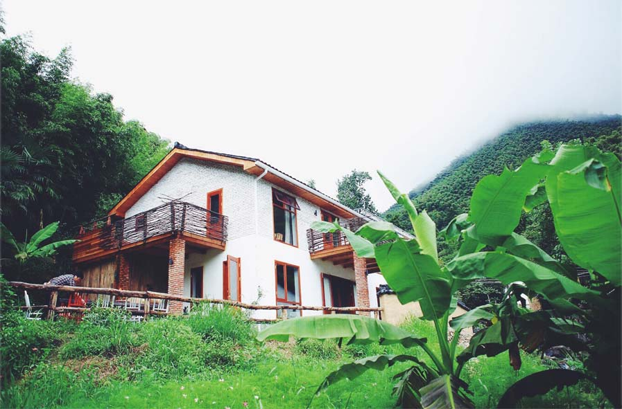
秘境现有的三栋楼里，一号楼诞生最早，在2014年的初夏，她的出现，改变了这个村落的故事。
背后倚靠一片竹海，面前是从山顶涌出的溪流，在梯田之上，安之若素。
一号楼共5个房间，温泉套房1间，大床房2间，双床房1间，榻榻米房1间。
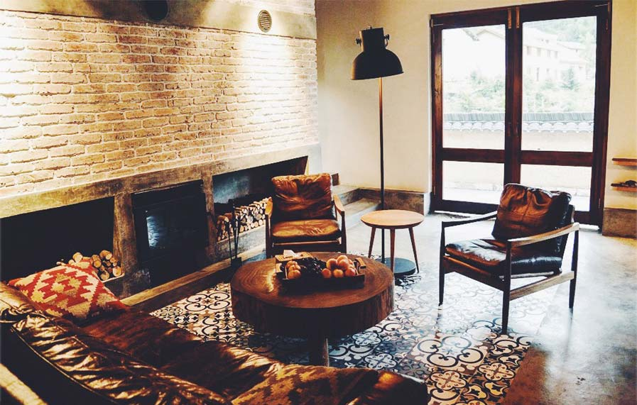
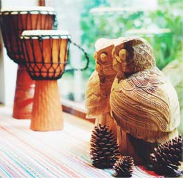
公共区 / 客厅
黄泥夯土和青瓦筑起的屋子，是梦里山间家园的样子，私密又野趣的温泉泡池，
靠着青山的露天浴缸，可以聚会的花园。
主楼为2层建筑，一层为客厅、餐厅、厨房、榻榻米房，二层为3间客房。
客厅设备
48寸SHARP液晶电视，BOSCH对开门冰箱，BOSE蓝牙音箱，设备齐全的厨房
可容纳10人聚餐的长条桌，皮质沙发，壁炉，电暖器片，空调，卫生间，儿童椅，电热水壶
花茶（茉莉 菊花 玫瑰 大麦），可提供投影仪（需提前预约）。
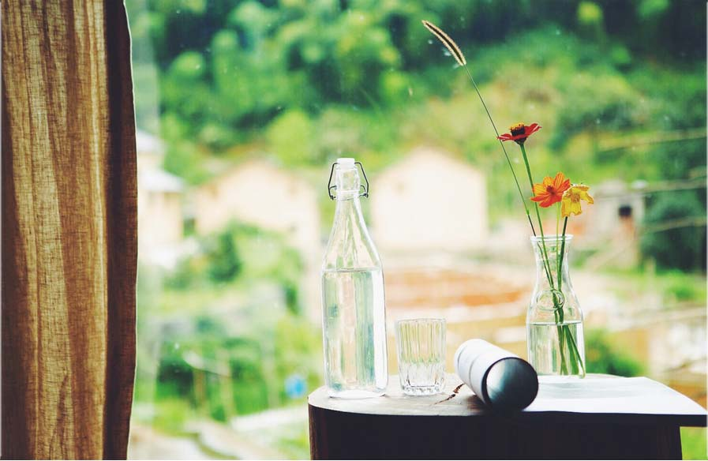
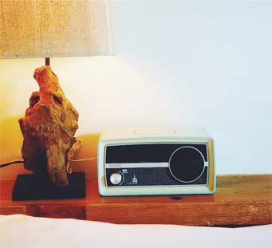 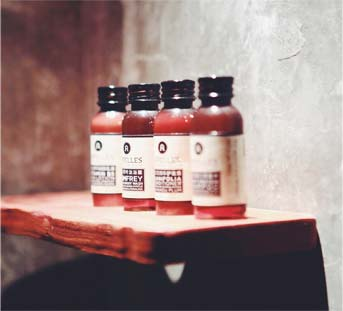
客房特色
1. 具有良好支撑力的品牌双层床垫
符合OEKO-TEX100欧盟环保体系认证的80支全棉丝光烧毛贡缎床品
羽绒枕，防羽布内填30%白鸭绒1100g，羽绒被，防羽布内填80%白鸭绒220g/㎡
2. 方巾2条、面巾2条、浴巾2条、地巾1条，竹柄软毛牙刷2支，护理包，浴帽，木梳
按需配备剃须刀，淋浴房，干湿分离卫生间
3. 绿茶、红茶 茶包，欢迎水果，Kilburn、Bose、JBL、雅马哈 音响播放器，独立空调，电暖器片，2瓶新西兰湾蓝水，吹风机，室外拖鞋，一次性室内棉布拖鞋
4. 免费无线网络，免费婴儿床（需提前预约），允许配备 1 张折叠床垫 / 200.00 CNY 每晚7*24小时 管家服务
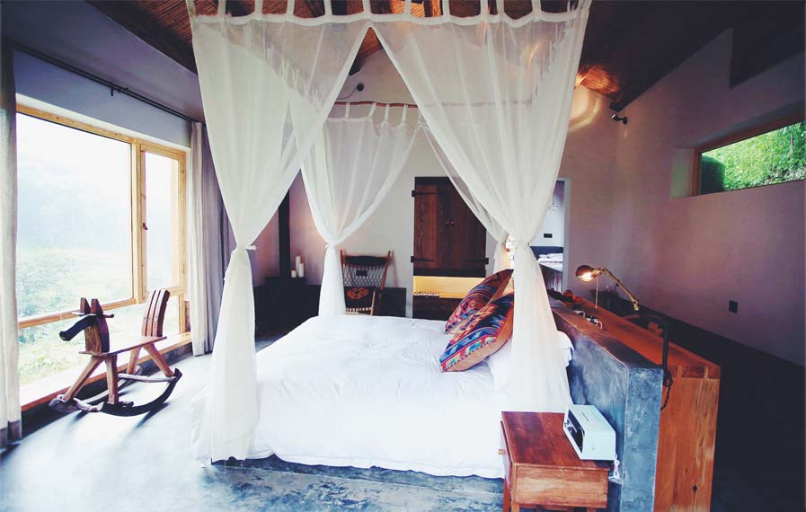
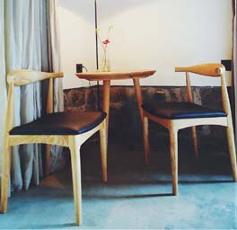 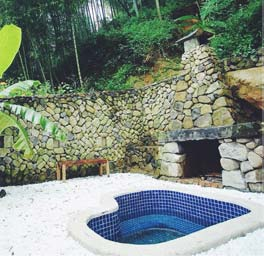 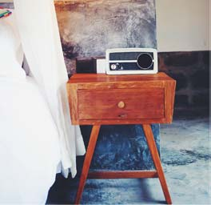
1101 客房设备 ↑
1.8*2.0米大床1张，壁炉，庭院温泉，书桌，边桌椅，木马。
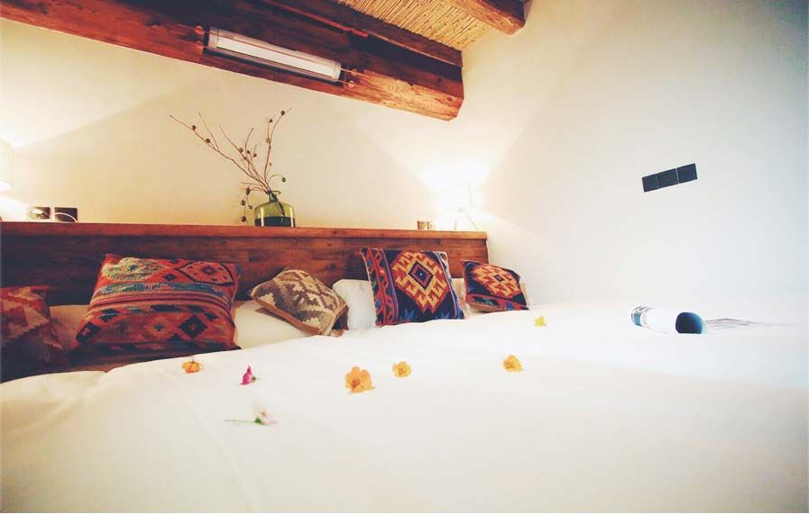
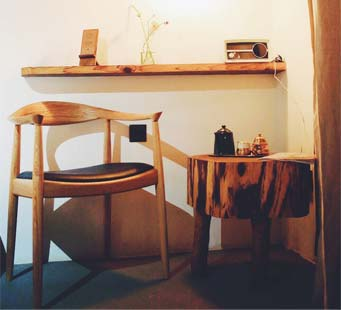 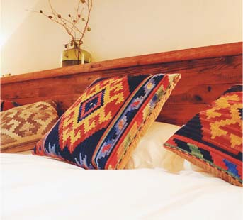
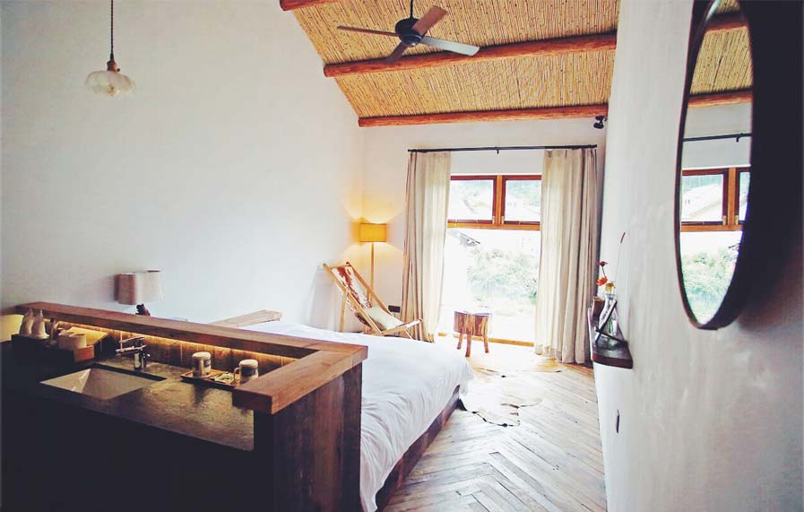
1102 客房设备 ↑
3.2*2.0米榻榻米床，边桌椅，榻榻米房卫生间在客厅一侧。
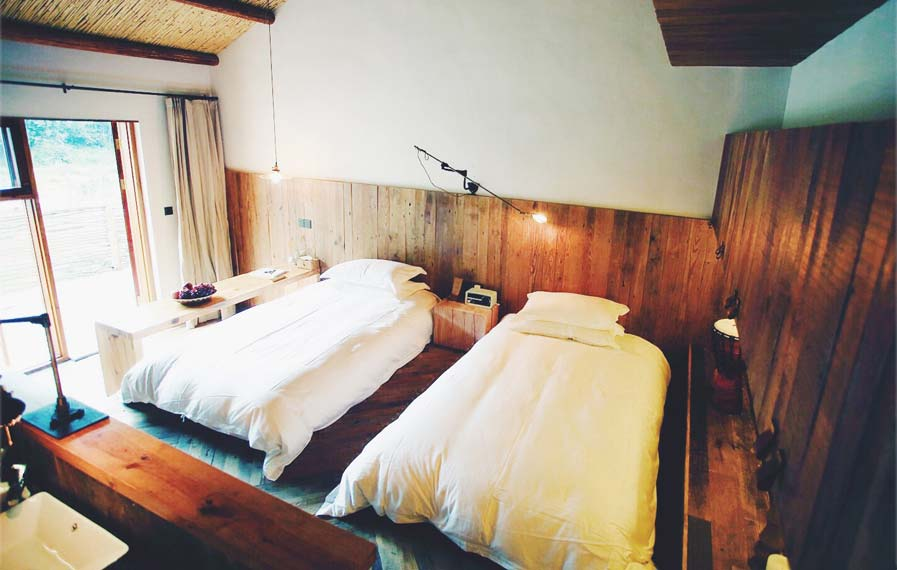
1201 客房设备 ↑
1.8*2.0米大床1张，边桌，躺椅。
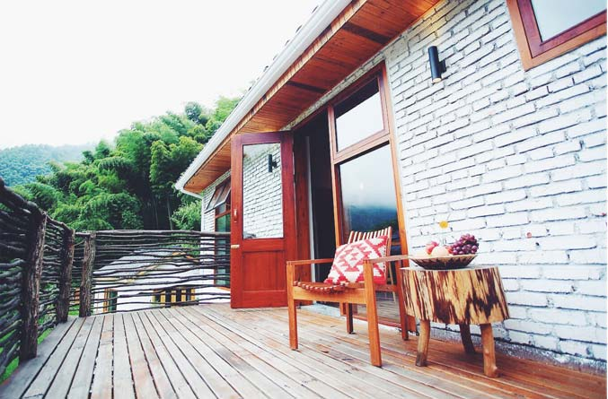
1202 客房设备 ↑
2张 1.2*2.0米单人床，书桌，独立露台。
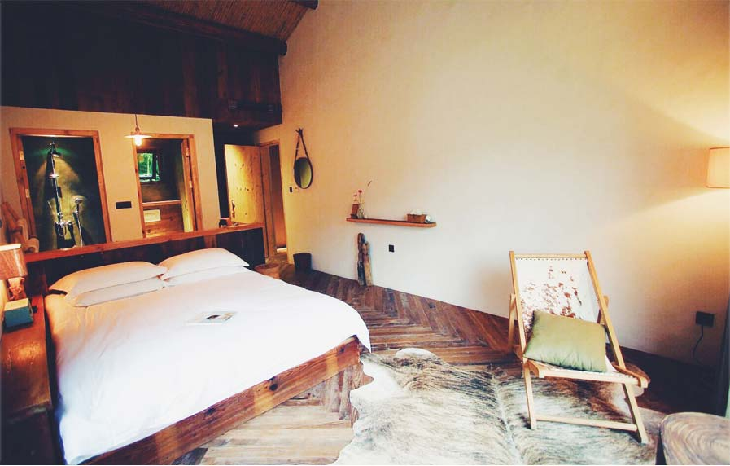
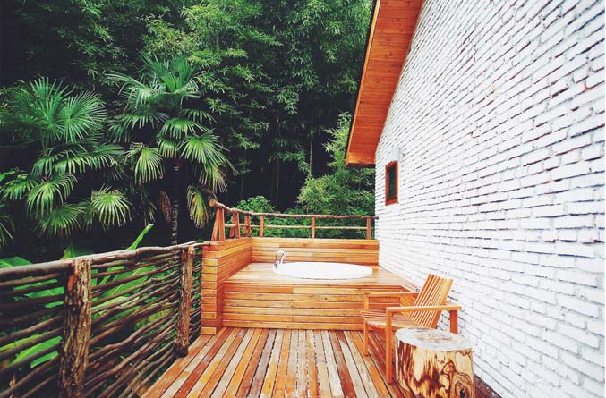
1203 客房设备 ↑
1.8*2.0米大床1张,边桌 躺椅，独立露台，室外浴缸（室内淋浴）。
＃以上为秘境1号楼·寻山 基本情况＃小楼